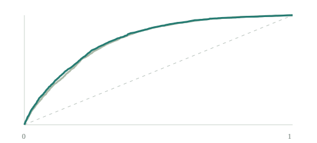
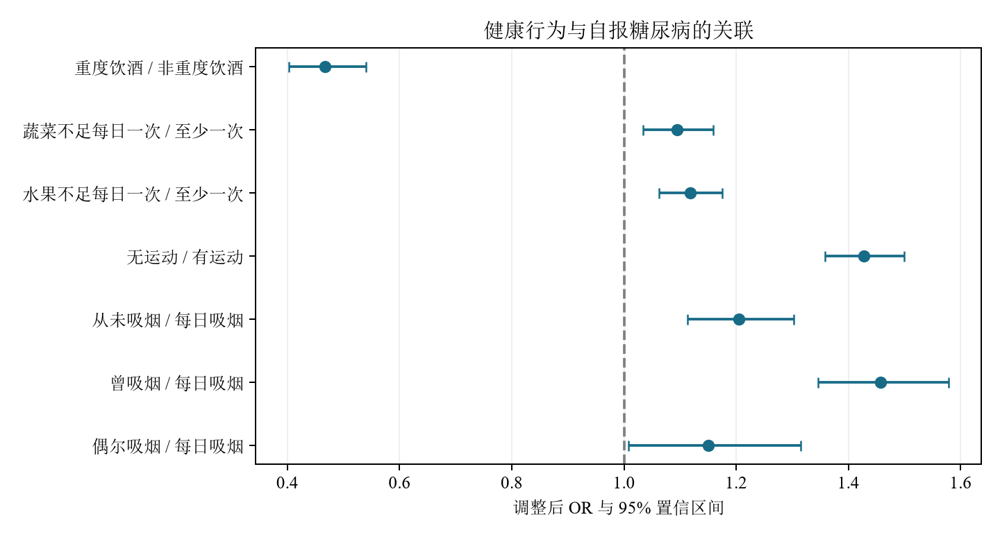
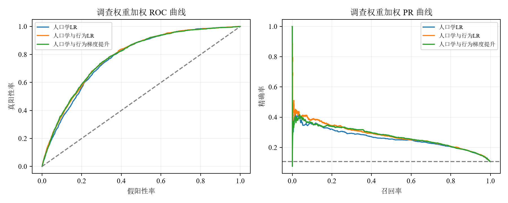
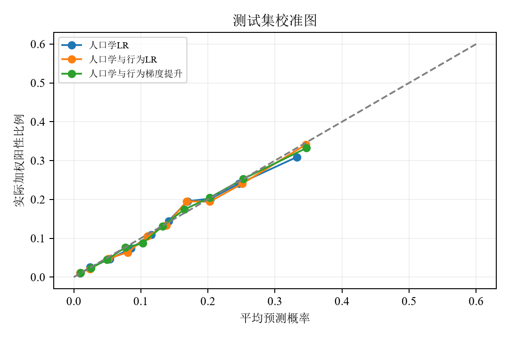

定义与读取
官方 SAS 原始文件。结局 DIABETE3：1 为自报糖尿病，3 为未报告糖尿病；排除妊娠期、前期及未知状态。
POPULATION HEALTH · 数据分析项目
基于 BRFSS 2015 调查中 307,683 名成人的完整记录，评估健康行为与自报糖尿病状态的关联及分类增量价值。
核心发现 / TEST-SET ROC-AUC

测试集加权 ROC · 完整评价见下文
AUC 增量较小。关联清楚的行为变量，
未必带来同等幅度的分类提升。
01 / RESEARCH WORKFLOW
结合变量测量方式与复杂抽样设计，开展数据质控、加权统计分析、分类模型评价及可解释性分析。
官方 SAS 原始文件。结局 DIABETE3：1 为自报糖尿病，3 为未报告糖尿病；排除妊娠期、前期及未知状态。
按字典处理特殊编码。9 项特征采用完整案例策略，保留 71.66%；收入无有效回答最多，达 17.96%。
按结局分层划分训练、验证、测试集，比例 60∶20∶20。独热编码只在训练集学习。
以训练集阳性比例构造无信息基线，对比人口学 LR、人口学与行为 LR、梯度提升。
报告 ROC、PR、概率校准及阈值权衡；分开解释调查关联 OR 与预测模型 SHAP。
保存模型 Pipeline、预测、指标和图表，网页从真实分析结果生成，提供复现材料。
主要预测特征按原始类别进行独热编码，编码器仅在训练集拟合。主分析采用完整案例策略，并评估样本筛选及缺失选择的影响。模型训练和性能评价使用 BRFSS 调查权重；分类阈值在验证集中按约登指数确定，测试集用于最终评价。
02 / DATA & ASSOCIATION
关联分析同时调整年龄、性别、教育、收入和其余行为变量，置信区间考虑分层与初级抽样单位。

03 / MODEL PERFORMANCE
全部评价使用同一独立测试集及调查权重。无信息基线能取得约 89.4% 准确率，但在 0.5 阈值下无法识别阳性。
| 模型 | ROC-AUC ↑ | AP ↑ | Brier ↓ | 评价视角 |
|---|


行为 LR 相对人口学 LR 的 AUC 增量为 0.0076，配对 Bootstrap 区间 0.0048–0.0106（150 次）。该区间衡量测试样本重抽稳定性，未模拟复杂抽样设计。
04 / THRESHOLD SENSITIVITY ANALYSIS
在同一测试样本中，比较不同分类阈值下的灵敏度、特异度、阳性预测值与误判构成。
预测概率 ≥ 阈值即判为阳性。滑块按 0.01 变化，恢复按钮使用验证集选出的精确阈值。此处用于展示，不用测试集重新选优。
05 / MODEL EXPLANATION
使用 Linear SHAP 解释人口学与行为 LR 的预测结果，从全局和个体两个层面展示特征贡献。贡献在 log-odds 尺度上相加。
固定随机种子抽取 500 条测试记录，计算加权平均绝对贡献；独热编码贡献按原变量合并。
绿色推动模型输出上升，灰色推动下降。参考点为训练集加权特征均值；独立干预假设下的贡献分配不等同于因果效应。
06 / REPRODUCIBILITY
本项目反映 2015 年调查中的自报状态。完整案例筛选排除了约 28% 的结局明确记录；同年度随机测试不能替代跨年度或外部验证。
网页中的交互数据来自已保存的模型预测，仅包含汇总统计和匿名贡献。研究报告与网站使用一致的模型评价结果，网站同时提供基线比较、阈值敏感性分析及模型解释。